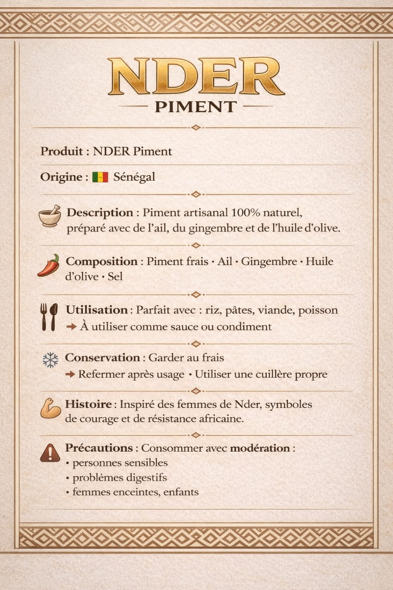
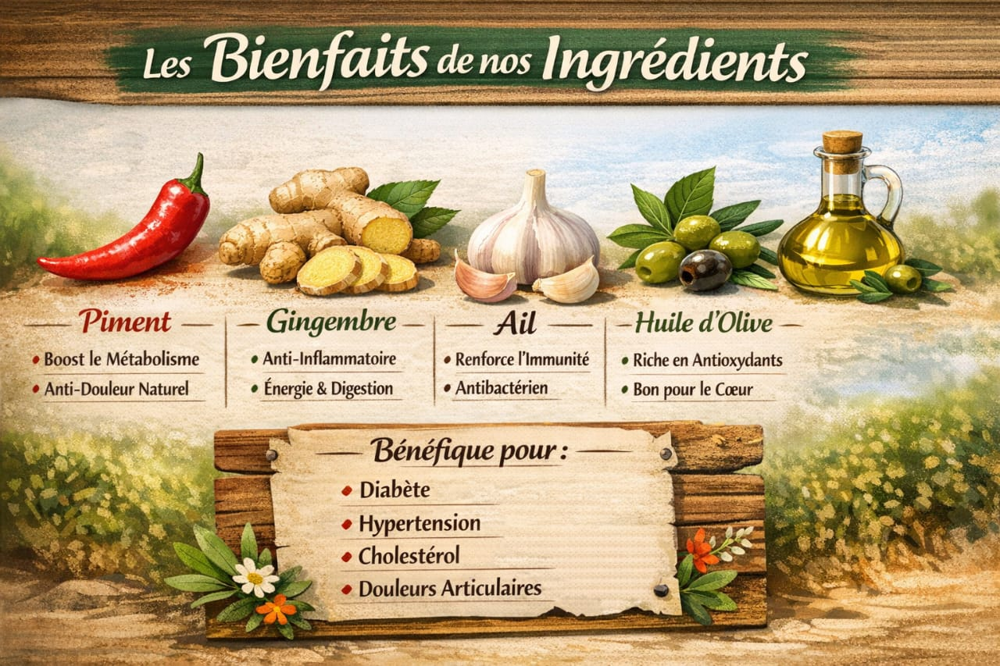

NDER PIMENT
Senegal – 100% artisanal

Piment artisanal • Ail • Gingembre • Huile d'olive

Bienfaits naturels
Composition Piment frais • Ail • Gingembre • Huile d'olive • Sel
Utilisation Parfait avec riz, pates, viande, poisson – a utiliser comme sauce ou condiment.
Conservation Garder au frais. Refermer apres usage, utiliser une cuillere propre.
Histoire Inspire des femmes de Nder, symboles de courage et de resistance africaine.
Les bienfaits de nos ingredients
Piment – boost metabolisme & anti-douleur
Gingembre – anti-inflammatoire, energie & digestion
Ail – renforce l'immunite, antibacterien
Huile d'olive – riche en antioxydants, bon coeur
Benefique pour Diabete • Hypertension • Cholesterol • Douleurs articulaires
A consommer avec moderation
Personnes sensibles, problemes digestifs, femmes enceintes, enfants.